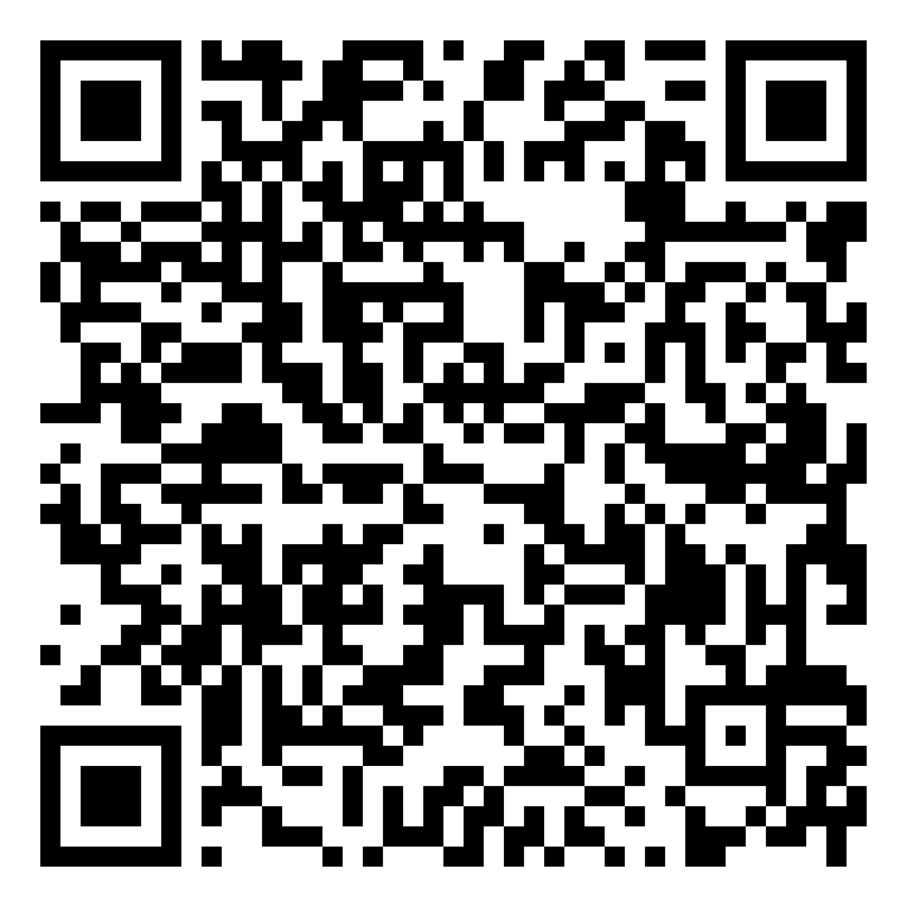
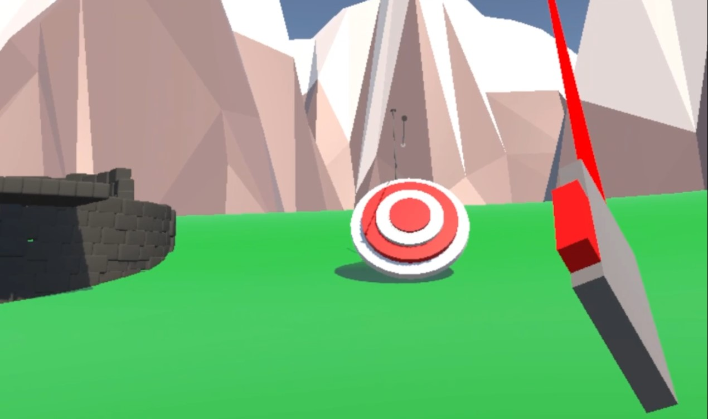
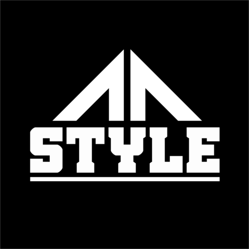

El Kit Interactivo Qhapaq Ñan es una propuesta educativa y tecnológica que integra Realidad Aumentada (AR), Realidad Virtual (VR) e impresión 3D para reinterpretar el patrimonio cultural del Camino Cañari–Inca en Ecuador.
A través de un sistema de packaging interactivo con códigos QR y multi-target AR, el usuario conecta el objeto físico con una experiencia digital inmersiva, promoviendo la interpretación cultural, el aprendizaje significativo y el turismo tecnológico.

Accede a la demostración interactiva y visualiza los modelos 3D y escenas XR desarrolladas en Unity.
Abrir Galería Interactiva
Desarrollo completo del proyecto desde la conceptualización hasta la implementación final. Diseño de experiencia de usuario (UX), modelado 3D, integración en Unity con AR Foundation y Vuforia, programación de interacciones XR, optimización de rendimiento, diseño de branding y packaging interactivo, documentación académica bajo normas APA 7 y preparación para defensa oral.